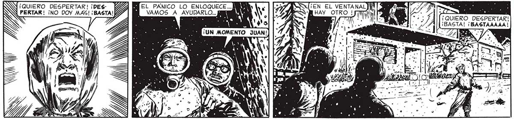
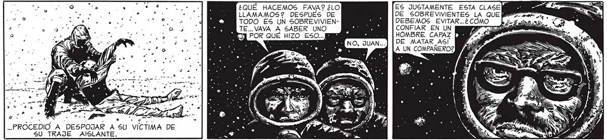

72 LO QUE OCURRIÓ” FUE DEMASIADO RAPIDO PARA PODER HACER / P . ... RÓCEDIO A DESP SU TRAJE AISLANTE. OJAR A 5U VÍCTIMA DE Y EL PANICO LO ENLOQUECE... AMM Ñ VAMOS A AYUDARLO... IN . S ! : . ( A ¡UN MOMENTO d , . OS SS) ), NN 44 )) (LA VOZ DEL DESDICHADO SE , CORTO. NO SÉ POR QUÉ, PENSÉ POR UN INSTANTE EN EL FONOGRAFO. ¿QUÉ HACEMOS FAVA? ¿LO LLAMAMOS? DESPUES DE TODO ES UN SOBREVIVIENTE... VAYA A SABER UNO 3] POR QUÉ HIZO ESO...E ; : . . ES A o 'Ñ xq e: . > >, e 4 , e -. F ¡EN EL VENTANAL QUIERO DESP.. 0 3 : C( e 0 ¿des ¡QUIERO DESPERTAR! ¡BASTA! ¡BASTAAAAA ! . * » 4 dy, 18 ASADA : l | AE ñ N de y A ÉL MATADOR SALTO A LA CALLE Y CON CALMA, SIN PRISA... * YA Ly ES JUSTAMENTE ESTA CLASE DE SOBREVIVIENTES LA QUE DEBEMOS EVITAR...¿ COMO CONFIAR EN UN DE MATAR_ASÍ A UN COMPAÑERO?

